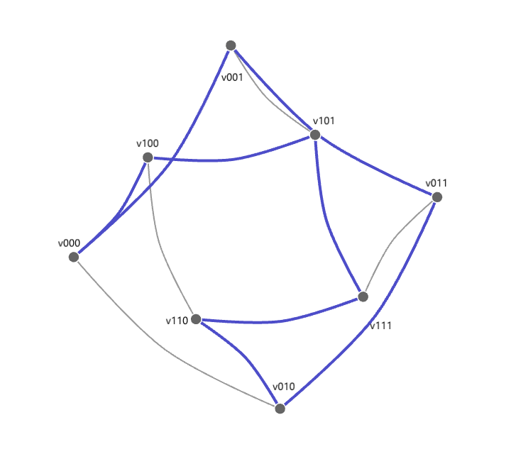
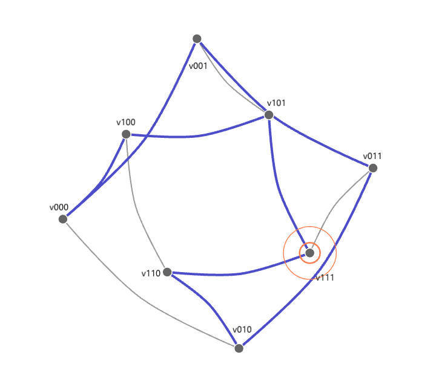
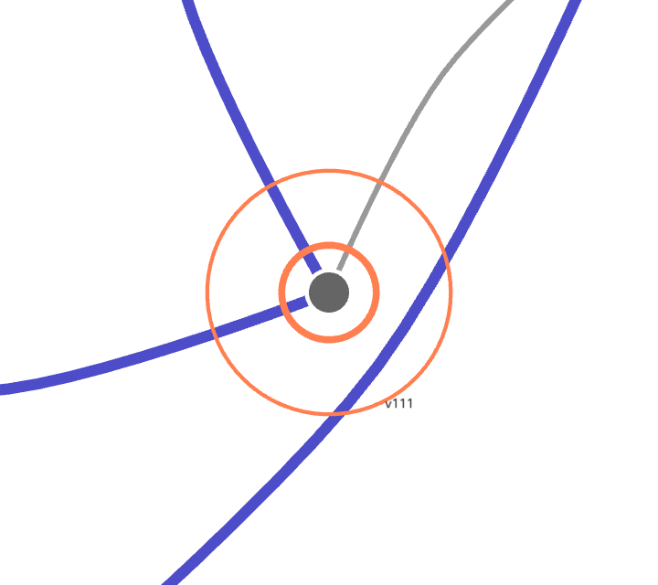
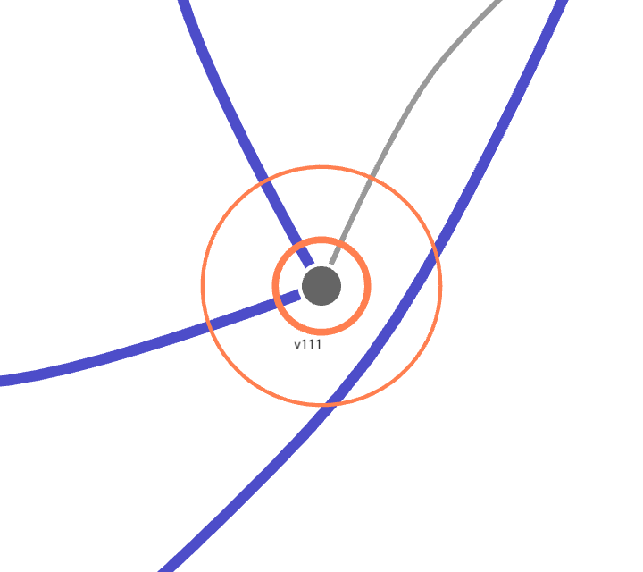

one-wedge

1A graph drawn planar: every vertex carries its name, and every name has rules to obey.

2A name must stay within 43.73 px of its dot. That circle is a rule, not a drawing.

3This one is 46.89 px away, so it is outside. Look closely.

4Given a second starting direction, the same name settles 21.53 px out, inside the leash.
4 frames, 3 numbers, none of them typed. Every frame passed the picture gate, and every number shown is the number its fact reported.